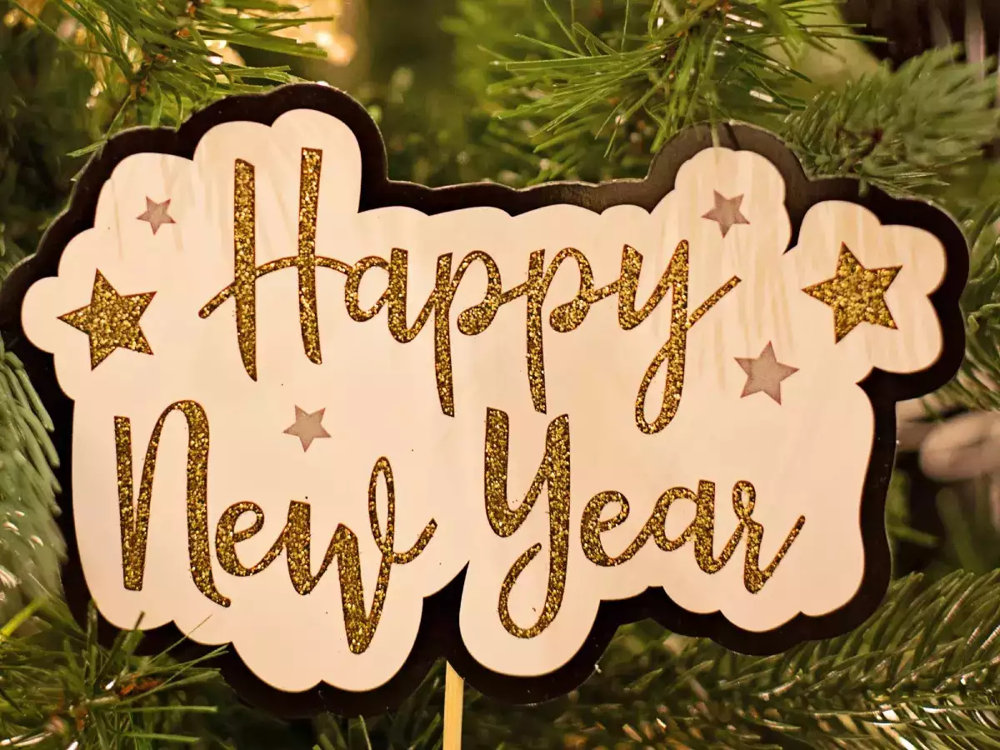

Wish you a happy new year!!

Hilarious New Year's Resolutions You'll Probably Break by January 2nd
With the arrival of the New Year, many people eagerly make resolutions, vowing to improve themselves and their lives. However, let's face it, most of these well-intentioned goals tend to fall by the wayside faster than confetti on New Year's Eve. So, let's take a lighthearted look at some hilarious resolutions that are destined to be broken before you even finish off the leftover holiday cookies.
- "I will exercise every day." Yes, because we all know that running late for work counts as cardio and lifting a glass of wine totally counts as weightlifting.
- "I will eat healthier." Sure, until you stumble upon that secret stash of chocolates you hid from yourself in the pantry.
- "I will wake up earlier." But who are we kidding? The snooze button has been our best friend for years, and it's not about to change now.
- "I will learn a new language." Duolingo might be optimistic about our language skills, but let's be real, ordering food in another language on vacation is about as far as we'll get.
- "I will quit procrastinating." We promise ourselves this every year, but somehow binge-watching Netflix shows always seems to win the battle against productivity.
- "I will save more money." Until that "50% off" sale at our favorite store shows up, and we realize saving money can wait until next year.
Remember, it's perfectly okay to laugh at our well-intentioned but often unrealistic resolutions. Embrace the humor, enjoy the journey, and remember that the best New Year's resolution is to find joy and laughter in the little things. So, here's to a year filled with laughter, happiness, and maybe just a few broken resolutions along the way. Cheers to a funny and fabulous New Year!